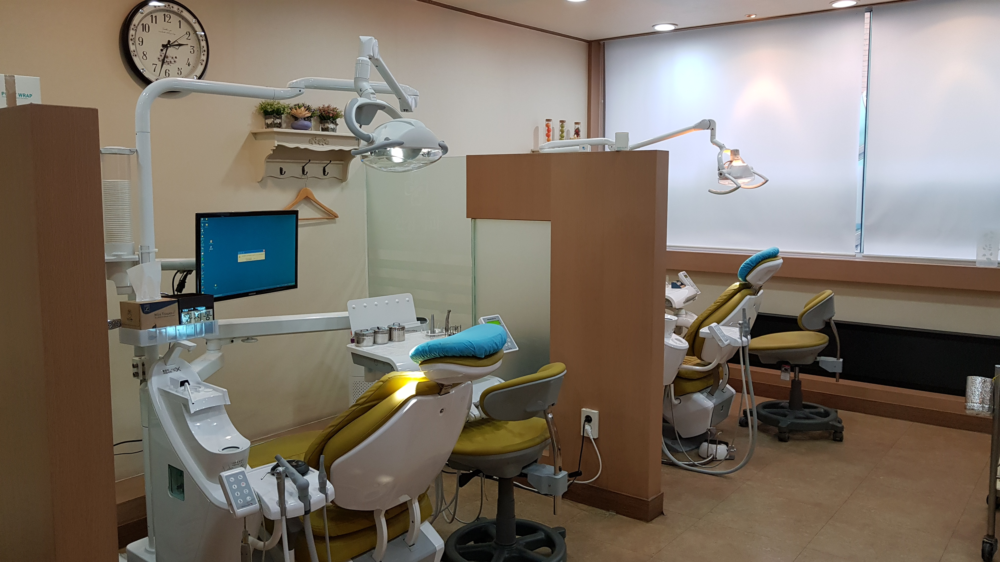
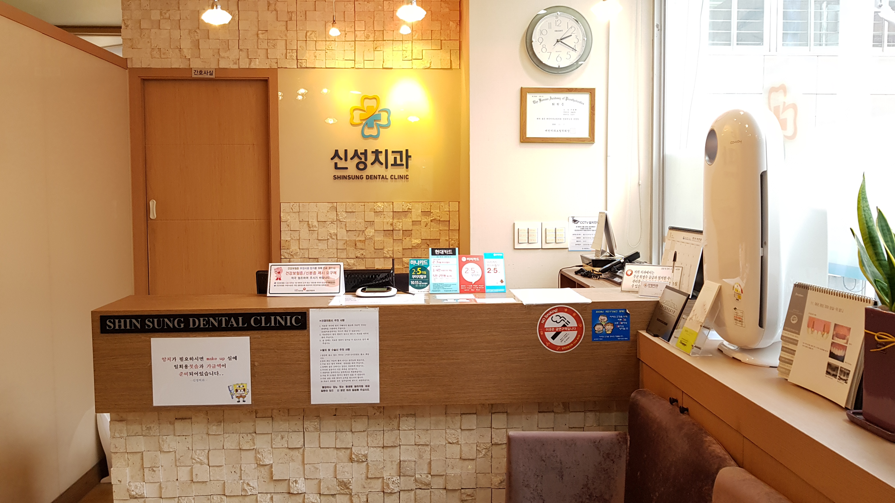

Our Clinic
편안하고 청결한 진료 환경
최신 장비와 철저한 위생 관리로 안심하고 치료받으실 수 있습니다.

진료실

접수처

대기실

병원 외관
Our Doctors
환자 한 분 한 분께 최선을 다하는 신성치과 의료진입니다.
대표원장
환자의 눈높이에 맞춘 꼼꼼하고 편안한 진료로 건강한 미소를 되찾아 드리겠습니다.
Our Clinic
최신 장비와 철저한 위생 관리로 안심하고 치료받으실 수 있습니다.

진료실

접수처
대기실
병원 외관